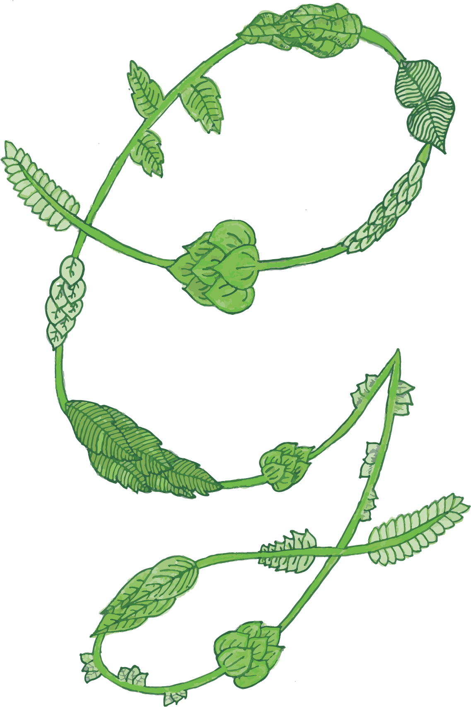
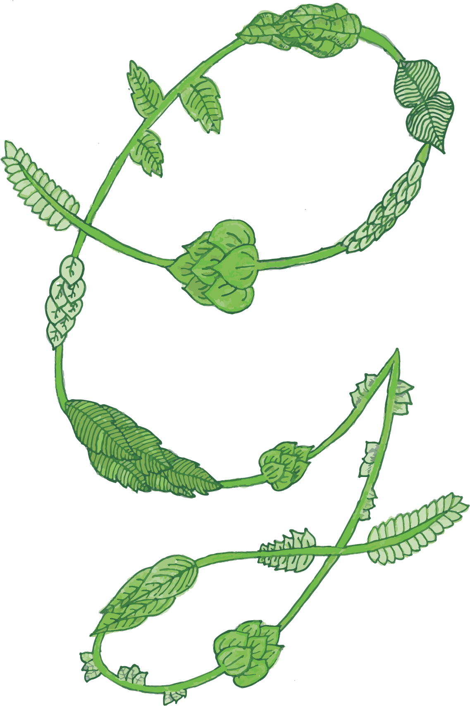

7pm 'til 10pm - Casual food & drinks
3pm - Welcome Drinks
4pm - Ceremony
7pm - Reception
9pm 'til late - Discothèque
Noon 'til late - BBQ
Saint-Lizier is a quaint hilltop village, 3 minutes drive from the Château.
Saint-Girons is a small town, 5 minutes drive from the Château.
- There is no direct bus route so you will have to change.
- You will need to use a local taxi company to get to the Château (see FAQs).
The map below shows some local hotel and dining recommendations. There are also a handful of Airbnb options which are not shown.
Unfortunately we cannot accommodate plus ones.
The Château is located on an active country road without pedestrian facilities so walking to the venue is not advised.
There is on site parking available.
Rideshare apps are not available in the local area so you will need to use a local taxi company. We will share details of options closer to the time.
Yes! The dress code is Semi-Formal Garden Party Attire. We recommend suit and tie & cocktail dresses. Additionally, the grass lawn is soft so re-think stilettos!
Weather permitting, the ceremony and reception will be outdoors.
- Visit a traditional french market in Saint-Girons (Saturday morning only).
- Hike one of the walking trails. The tourist office can provide maps and more information depending on what you’re looking for.
- Admire the mountains from a viewpoint in Saint-Lizier (in front of le Carré de l’Ange restaurant).
- Stone Garden (15 minute drive) is a local bathing river spot.
- Foix (45 minute drive) is a charming medieval town.
- The Sanctuaires Notre-Dame de Lourdes (90 minute drive) is a major Catholic pilgrimage site.
- Les Bains du Couloubret (90 minute drive) is a spa centre with natural thermal waters.

 
